สถาปัตยกรรมแบบไฮบริด: สิ่งที่ดีที่สุดของทั้งสองโลกด้วย Supabase และ Spring Boot
เผยแพร่เมื่อ 14 January 2026
แทนที่จะต้องเลือกระหว่างความเรียบง่ายของ Supabase หรือความทรงพลังของ Spring Boot ทำไมไม่ลองนำทั้งสองอย่างมาใช้ร่วมกันดูล่ะ? พบกับสถาปัตยกรรมแบบไฮบริดที่ดึงจุดเด่นที่สุดของแต่ละเทคโนโลยีมาใช้ประโยชน์
- สารบัญ
-
[]
- ทางเลือกลวงของสถาปัตยกรรมสมัยใหม่
- วิสัยทัศน์ทางสถาปัตยกรรม
- หลักการออกแบบ
- การจัดการลำดับการไหลของข้อมูล (Orchestration des Flux)
- ตารางการตัดสินใจ
- ตัวอย่างสถาปัตยกรรมตามประเภทของโปรเจกต์
- กลยุทธ์การย้ายข้อมูลแบบค่อยเป็นค่อยไป
- ต้นทุนและข้อพิจารณาด้านการดำเนินงาน
- บทสรุป : ความสมดุลที่สมบูรณ์แบบ
- ข้อมูลเพิ่มเติม
- มุมมองด้านวิวัฒนาการ
- คำพยานทางสถาปัตยกรรม
- บทสรุป: กระบวนทัศน์ทางสถาปัตยกรรมสมัยใหม่
- บทสรุปสุดท้าย
ทางเลือกลวงของสถาปัตยกรรมสมัยใหม่
เมื่อสร้างแอปพลิเคชันสมัยใหม่ที่มีเฟรอนต์เอนด์แบบสแตติก เรามักจะพบกับทางเลือกแบบสองทางเลือก คือ:
-
ทุ่มเดิมพันทั้งหมดไปกับโซลูชัน Backend-as-a-Service(Supabase, Firebase) - ง่ายแต่มีข้อจำกัด
-
สร้าง backend แบบครบวงจร(Spring Boot, Node.js) - ทรงพลังแต่ซับซ้อน
ทางเลือกนี้เป็นทางเลือกลวง (false dilemma) สถาปัตยกรรมแบบไฮบริดนำเสนอทางเลือกที่สาม นั่นคือ การใช้แต่ละเทคโนโลยีในจุดที่โดดเด่นที่สุด
วิสัยทัศน์ทางสถาปัตยกรรม
สถาปัตยกรรมแบบดั้งเดิม: Monolithique
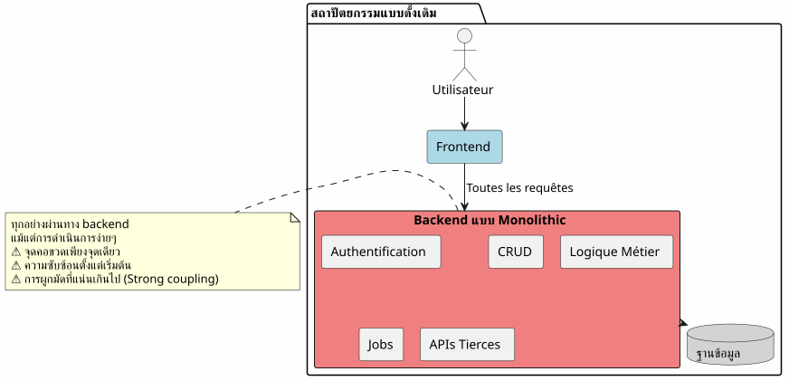
ในแนวทางนี้ แม้แต่การดำเนินการที่ง่ายที่สุด (เช่น การอ่านบทความ, การสร้างความคิดเห็น) จะต้องผ่านทาง backend ของคุณ ซึ่งหมายความว่าคุณต้องแบกรับต้นทุนด้านความซับซ้อนตั้งแต่วันแรก
สถาปัตยกรรม BaaS: การมอบหมายทั้งหมด
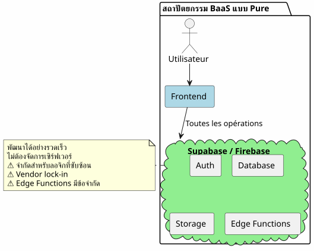
ในทางตรงกันข้าม การมอบหมายทุกอย่างให้ BaaS นั้นดูน่าดึงดูดในตอนแรก แต่จะเริ่มเห็นข้อจำกัดอย่างรวดเร็วเมื่อตรรกะทางธุรกิจมีความซับซ้อนมากขึ้น
สถาปัตยกรรมแบบไฮบริด: การแยกส่วนความรับผิดชอบ
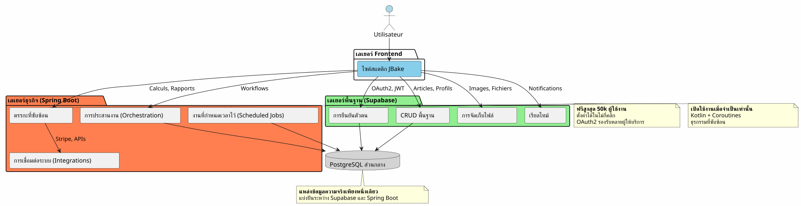
สถาปัตยกรรมแบบไฮบริดแยกความรับผิดชอบอย่างชัดเจนตามความซับซ้อนและลักษณะของการดำเนินงาน
หลักการออกแบบ
หลักการที่ 1: เริ่มต้นอย่างเรียบง่าย พัฒนาอย่างชาญฉลาด
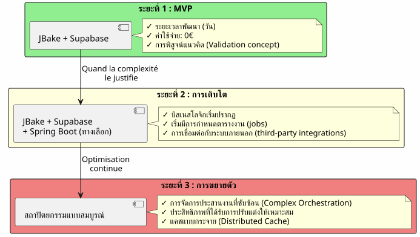
อย่าสร้าง Spring Boot หากคุณไม่จำเป็นต้องใช้เริ่มต้นด้วย Supabase แล้วค่อยเพิ่ม Spring Boot เมื่อความซับซ้อนมีความจำเป็นต้องใช้
หลักการที่ 2: การแยกตามลักษณะของการดำเนินงาน

หลักการที่ 3: แหล่งข้อมูลความจริงหนึ่งเดียว (Single Source of Truth)
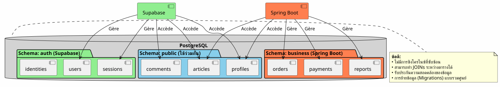
ด้วยการใช้ PostgreSQL instance เดียวกัน Supabase และ Spring Boot จึงทำงานบนข้อมูลชุดเดียวกันโดยไม่ต้องมีการซิงโครไนซ์ที่ซับซ้อน
การจัดการลำดับการไหลของข้อมูล (Orchestration des Flux)
Flux 1 : การพิสูจน์ตัวตนแบบรวมศูนย์
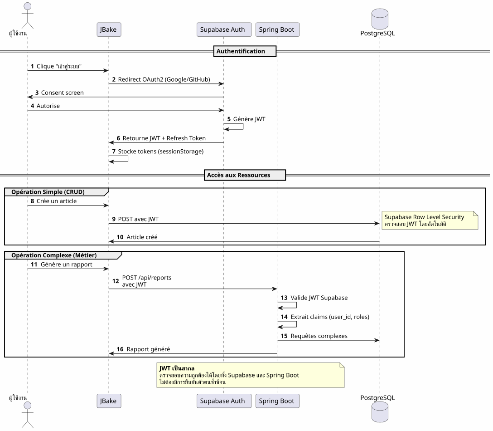
ประเด็นสำคัญ: กระบวนการยืนยันตัวตนเพียงชุดเดียว, JWT เพียงตัวเดียว, ใช้งานได้ในทุกที่
Flux 2 : การจัดลำดับขั้นตอนของกระบวนการทางธุรกิจที่ซับซ้อน
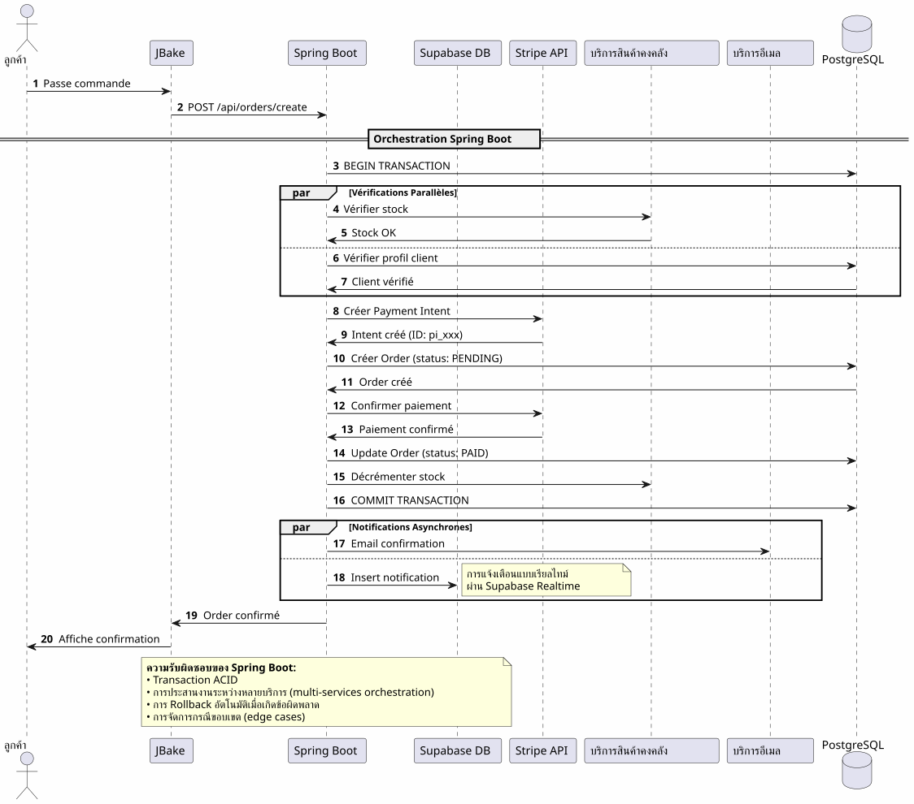
สิ่งที่ Spring Boot มอบให้: การประสานงาน (Orchestration) ที่เชื่อถือได้สำหรับกระบวนการที่ซับซ้อนซึ่งเกี่ยวข้องกับหลายระบบ พร้อมการรับประกันธุรกรรม (transactional guarantee)
Flux 3 : งานที่วางแผนไว้และการซิงโครไนซ์
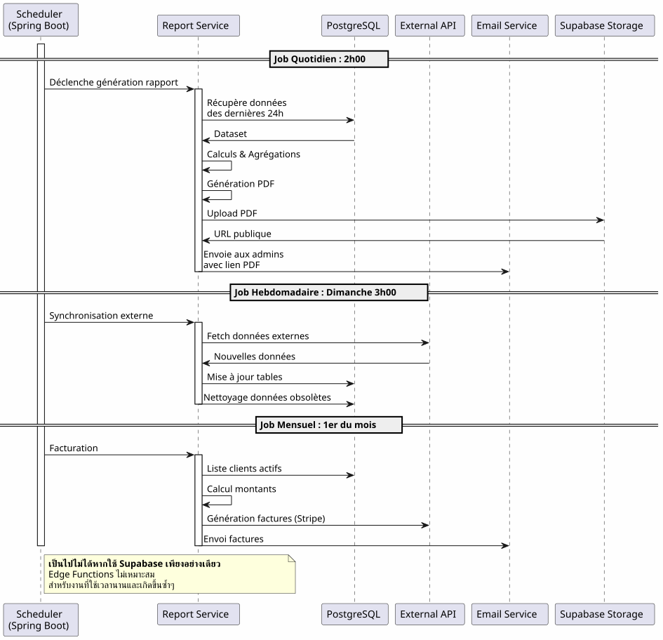
สิ่งที่ Spring Boot มอบให้: การวางแผนงาน (Jobs) ที่เชื่อถือได้ พร้อมการจัดการสถานะ, การลองใหม่ (retry) อัตโนมัติ และการรับประกันการทำงาน
ตารางการตัดสินใจ
ควรใช้ Supabase เมื่อใด?

เมื่อใดควรใช้ Spring Boot?

ตัวอย่างสถาปัตยกรรมตามประเภทของโปรเจกต์
บล็อก / พอร์ตโฟลิโอ
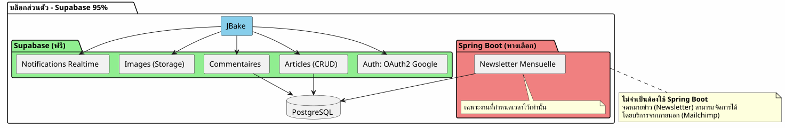
คำตัดสิน: Supabase 100% ก็เพียงพอแล้ว
แอปพลิเคชัน SaaS
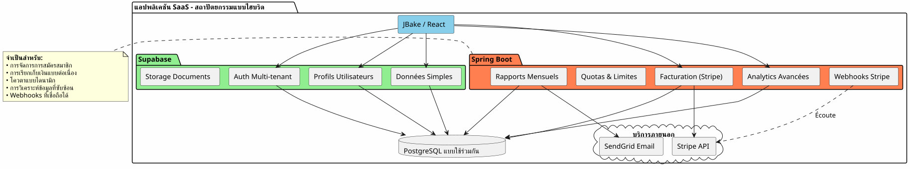
คำตัดสิน: จำเป็นต้องใช้สถาปัตยกรรมแบบไฮบริด โดยใช้ Supabase สำหรับส่วนหลัก และ Spring Boot สำหรับส่วนที่สำคัญ (การชำระเงิน, การออกใบแจ้งหนี้)
อีคอมเมิร์ซ
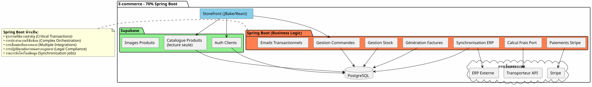
คำตัดสิน: Spring Boot จำเป็นอย่างยิ่ง ใช้ Supabase สำหรับ auth และ catalogue เท่านั้น
กลยุทธ์การย้ายข้อมูลแบบค่อยเป็นค่อยไป
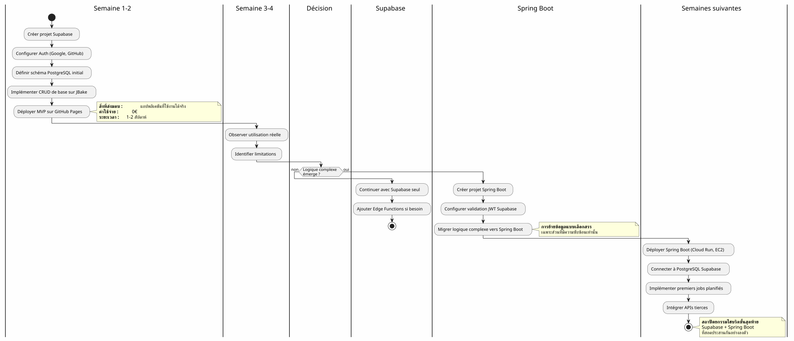
ต้นทุนและข้อพิจารณาด้านการดำเนินงาน
โครงสร้างต้นทุน
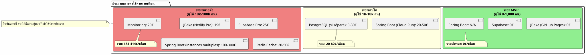
ความรับผิดชอบด้านการปฏิบัติงาน
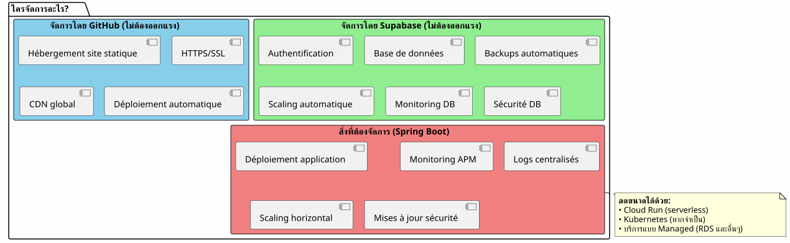
บทสรุป : ความสมดุลที่สมบูรณ์แบบ
สถาปัตยกรรมแบบไฮบริดระหว่าง Supabase + Spring Boot ไม่ใช่การประนีประนอม แต่เป็นหนึ่งในการทำงานร่วมกันอย่างมีประสิทธิภาพโปรดระบุข้อความภาษาฝรั่งเศสที่คุณต้องการให้แปลครับ
หลักการที่ควรจำ

ควรเลือกสถาปัตยกรรมนี้เมื่อใด?
✅ สถาปัตยกรรมนี้เหมาะสำหรับกรณีที่:
-
คุณต้องการเริ่มต้นอย่างรวดเร็ว (MVP ในระดับวัน ไม่ใช่ระดับเดือน)
-
คุณคาดการณ์ว่าความซับซ้อนของธุรกิจจะเพิ่มขึ้น
-
คุณต้องการลดค่าใช้จ่ายเริ่มต้นให้เหลือน้อยที่สุด
-
คุณชอบ PostgreSQL และต้องการแหล่งข้อมูลความจริงเดียว (single source of truth)
-
คุณชื่นชอบ Kotlin และ Coroutines สำหรับการเขียนโค้ดทางธุรกิจ
-
คุณต้องการหลีกเลี่ยงการผูกขาดโดยผู้ให้บริการ (
vendor lock-in) อย่างสมบูรณ์
❌ สถาปัตยกรรมนี้ไม่เหมาะสม หาก:
-
โปรเจกต์ของคุณนั้นเรียบง่ายและจะยังคงเป็นเช่นนั้น (บล็อกส่วนตัว → แค่ Supabase 100% ก็เพียงพอ)
-
คุณมี stack backend ที่ติดตั้งไว้แล้วและมีความเชี่ยวชาญอยู่แล้ว
-
คุณชอบแบบ monolithe แบบดั้งเดิมมากกว่า
-
คุณต้องใช้ .NET, Python หรือภาษาอื่นๆ ในฝั่ง backend
ภาพรวมสุดท้าย
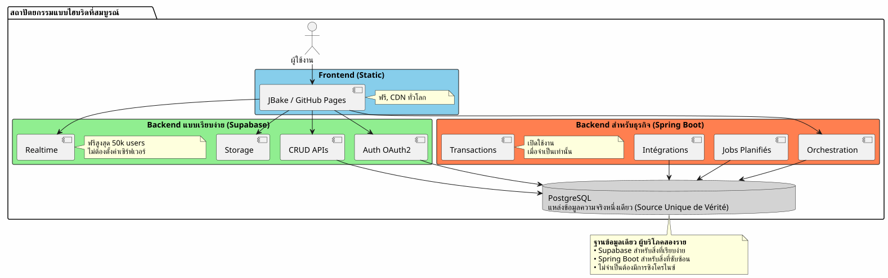
สิ่งที่ดีที่สุดของทั้งสองโลก
สถาปัตยกรรมนี้จะช่วยให้คุณได้รับ:
🚀 ความเร็วของ Supabase
-
เริ่มต้นในระดับชั่วโมง ไม่ใช่ระดับสัปดาห์
-
การยืนยันตัวตนด้วย OAuth2 ในไม่กี่คลิก
-
REST APIs ที่สร้างขึ้นโดยอัตโนมัติ
-
ไม่ต้องกำหนดค่าเซิร์ฟเวอร์
💪 พลังของ Spring Boot
-
Kotlin และ Coroutines เพื่อโค้ดแบบอะซิงโครนัสที่สวยงาม
-
การประสานงานกระบวนการทางธุรกิจที่ซับซ้อน
-
การกำหนดเวลาจ็อบที่เชื่อถือได้
-
การันตีธุรกรรมแบบ ACID
-
ระบบนิเวศ Spring ที่สมบูรณ์แบบ
💰 เศรษฐกิจแบบก้าวหน้า
-
0€ เพื่อเริ่มต้นและยืนยัน
-
ต้นทุนที่แปรผันตามการเติบโต
-
อย่าทำ over-engineering เร็วเกินไป
🎯 ความยืดหยุ่นทางสถาปัตยกรรม
-
การย้ายระบบแบบค่อยเป็นค่อยไปโดยไม่มีการรื้อทำใหม่
-
เพิ่ม Spring Boot เฉพาะเมื่อจำเป็นเท่านั้น
-
ไม่มีการผูกขาดโดยผู้ให้บริการ (vendor lock-in) อย่างสมบูรณ์
-
สถาปัตยกรรมที่ปรับขยายได้
ข้อมูลเพิ่มเติม
ทรัพยากรทางเทคนิค
เอกสารประกอบของ Supabase :
เอกสารประกอบ Spring Boot :
บทความเพิ่มเติม:
-
การรักษาความปลอดภัยของ API ด้วย JWT
-
การเพิ่มประสิทธิภาพประสิทธิภาพของ PostgreSQL
-
รูปแบบการย้ายระบบแบบค่อยเป็นค่อยไป
-
การจัดการข้อผิดพลาดในสถาปัตยกรรมแบบกระจายตัว
กรณีการใช้งานจริง
สถาปัตยกรรมแบบไฮบริดนี้ถูกนำมาใช้อย่างประสบความสำเร็จใน:
-
SaaS B2B: การยืนยันตัวตนด้วย Supabase, การเรียกเก็บเงินด้วย Spring Boot
-
มาร์เก็ตเพลส: แค็ตตาล็อก Supabase, ธุรกรรม Spring Boot
-
แพลตฟอร์มเนื้อหา: บทความ Supabase, analytics Spring Boot
-
เครื่องมือภายใน: CRUD Supabase, workflows Spring Boot
รายการตรวจสอบก่อนเริ่มงาน
ระยะที่ 1 - พื้นฐาน (สัปดาห์ที่ 1)
-
สร้างบัญชี Supabase - [ ] กำหนดค่าโปรเจกต์ PostgreSQL - [ ] เปิดใช้งาน Auth (Google, GitHub) - [ ] กำหนดโครงสร้างเริ่มต้น - [ ] กำหนดค่า Row Level Security - [ ] ทดสอบ API จาก JBake
ระยะที่ 2 - MVP (สัปดาห์ที่ 2-3)
-
ดำเนินการสร้างหน้าหลักๆ - [ ] รวมการยืนยันตัวตน OAuth2 - [ ] สร้างแบบฟอร์ม CRUD - [ ] กำหนดค่า Storage สำหรับไฟล์ - [ ] นำไปใช้งานบน GitHub Pages - [ ] ทดสอบในสภาวะการใช้งานจริง
ระยะที่ 3 - การพัฒนา (ตามความต้องการ)
-
ระบุความต้องการของตรรกะที่ซับซ้อน - [ ] สร้างโปรเจกต์ Spring Boot หากจำเป็น - [ ] กำหนดค่าการตรวจสอบสิทธิ์ JWT ของ Supabase - [ ] เชื่อมต่อกับ PostgreSQL Supabase - [ ] ย้ายฟังก์ชันการทำงานที่ซับซ้อน - [ ] นำ job ที่กำหนดเวลาไว้มาใช้งาน - [ ] ปรับใช้ Spring Boot (Cloud Run และอื่นๆ)
Anti-Patterns ที่ควรหลีกเลี่ยง
❌ สิ่งที่ไม่ควรทำ:
-
คัดลอกข้อมูลระหว่าง Supabase และ Spring Boot
-
สร้างฐานข้อมูล PostgreSQL แยกกันสองฐานข้อมูล
-
เขียนระบบการยืนยันตัวตนด้วยตัวเอง
-
ใช้ Spring Boot สำหรับ CRUD แบบง่ายๆ
-
การออกแบบสถาปัตยกรรมที่ซับซ้อนเกินความจำเป็นตั้งแต่เริ่มต้น
-
ละเว้น Row Level Security ของ Supabase
✅ ควรทำดังนี้:
-
แบ่งปันฐานข้อมูล PostgreSQL เพียงฐานเดียว
-
ให้ Supabase จัดการการยืนยันตัวตน
-
ใช้ Spring Boot เฉพาะสำหรับส่วนที่มีความซับซ้อนเท่านั้น
-
เริ่มต้นแบบเรียบง่าย แล้วค่อยๆ พัฒนาขึ้นอย่างต่อเนื่อง
-
ใช้ประโยชน์จากจุดแข็งของแต่ละเทคโนโลยี
-
รักษาความปลอดภัยด้วย RLS ในระดับฐานข้อมูล
มุมมองด้านวิวัฒนาการ
การเพิ่มความสามารถใหม่ๆ
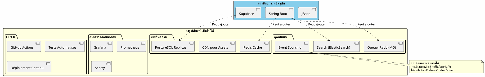
การขยายขนาดในแนวนอน (Scaling Horizontal)
เมื่อแอปพลิเคชันของคุณเติบโตขึ้น สถาปัตยกรรมแบบไฮบริดจะขยายตัว (scale) ได้อย่างเป็นธรรมชาติ:
Supabase :
-
ปรับขนาดโดยอัตโนมัติได้สูงสุดถึงหลายล้านการดำเนินงาน
-
Read replicas เพื่อเพิ่มประสิทธิภาพในการอ่าน
-
การกู้คืนข้อมูลย้อนหลังตามจุดเวลา (Point-in-time recovery) เพื่อความปลอดภัย
Spring Boot :
-
อินสแตนซ์หลายชุดอยู่ด้านหลัง load balancer
-
การออกแบบแบบ Stateless ช่วยให้การทำ horizontal scaling ทำได้ง่ายขึ้น
-
Kubernetes สำหรับการทำ orchestration หากจำเป็น
PostgreSQL :
-
การทำ Partitioning สำหรับตารางขนาดใหญ่
-
การรวมกลุ่มการเชื่อมต่อ (PgBouncer)
-
การทำ Sharding หากจำเป็นจริงๆ (พบน้อย)
คำพยานทางสถาปัตยกรรม
สตาร์ทอัป SaaS (ผู้ใช้งาน 50k ราย)
โปรดระบุข้อความที่คุณต้องการให้แปลครับ เราเริ่มต้นด้วย Supabase 100% เมื่อมีผู้ใช้ถึง 5k ราย เราได้เพิ่ม Spring Boot เข้ามาเพื่อใช้สำหรับระบบเรียกเก็บเงินของ Stripe และรายงานรายเดือนเท่านั้น หนึ่งปีต่อมา 80% ของการดำเนินงานของเรายังคงผ่าน Supabase โดยที่ Spring Boot จัดการเฉพาะส่วนที่สำคัญเท่านั้น การแยกส่วนแบบนี้ช่วยให้เราสามารถขยายระบบได้โดยไม่ต้องรื้อทำใหม่ โปรดระบุข้อความที่คุณต้องการให้แปลครับ
แพลตฟอร์ม E-learning (ผู้ใช้งาน 10k ราย)
โปรดระบุข้อความที่คุณต้องการให้แปลครับ การยืนยันตัวตน OAuth2 ของ Supabase ช่วยให้เราประหยัดเวลาในการพัฒนาไปได้ถึง 3 สัปดาห์ ส่วน APIs ที่ถูกสร้างขึ้นโดยอัตโนมัติช่วยจัดการแคตตาล็อกคอร์สเรียนทั้งหมดของเรา โดย Spring Boot ถูกนำมาใช้เพียงเพื่อจัดการใบรับรอง PDF และอีเมลแจ้งความคืบหน้าเท่านั้น เป็นสถาปัตยกรรมที่เรียบง่าย บำรุงรักษาง่าย และขยายขนาดได้ Please provide the text you would like me to translate.
Marketplace B2B (ผู้ใช้งาน 3k คน)
โปรดระบุข้อความที่คุณต้องการให้แปลจากภาษาฝรั่งเศสเป็นภาษาไทย Spring Boot จัดการธุรกรรมระหว่างผู้ซื้อและผู้ขาย (ส่วนสำคัญ) Supabase จัดการส่วนที่เหลือทั้งหมด: โปรไฟล์, การส่งข้อความแบบเรียลไทม์, เอกสาร การที่ทั้งคู่ใช้ฐานข้อมูล PostgreSQL เดียวกันทำให้เราไม่ต้องทำระบบซิงโครไนซ์ที่ซับซ้อน เป็นทางเลือกด้านสถาปัตยกรรมที่ดีที่สุดเท่าที่เราเคยทำมา โปรดระบุข้อความที่คุณต้องการให้แปลครับ
บทสรุป: กระบวนทัศน์ทางสถาปัตยกรรมสมัยใหม่
สถาปัตยกรรมแบบไฮบริด Supabase + Spring Boot คือตัวแทนของกระบวนทัศน์ใหม่:ความเชี่ยวชาญเฉพาะทางด้านสถาปัตยกรรมกรุณาระบุข้อความภาษาฝรั่งเศสที่คุณต้องการให้แปลครับ
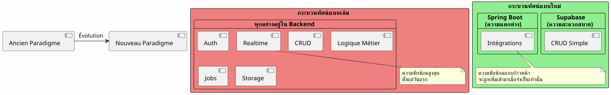
หลักการพื้นฐาน:อย่าสร้างสิ่งที่ มีอยู่แล้วในรูปแบบของบริการ ให้มุ่งเน้นไปที่สิ่งที่ทำให้แอปพลิเคชันของคุณแตกต่าง
กฎ 80/20
ในแอปพลิเคชันส่วนใหญ่:
-
80% ของการดำเนินการคือ CRUD มาตรฐาน → Supabase
-
20% ของการดำเนินงานที่ต้องใช้ตรรกะทางธุรกิจ (business logic) → Spring Boot
กฎธรรมชาติข้อนี้ช่วยให้สถาปัตยกรรมแบบไฮบริดมีความสมเหตุสมผล
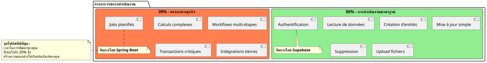
บทสรุปสุดท้าย
สถาปัตยกรรมแบบไฮบริดไม่ใช่การประนีประนอมทางเทคนิค แต่เป็นการตัดสินใจเชิงกลยุทธ์กรุณาระบุข้อความภาษาฝรั่งเศสที่คุณต้องการให้แปลครับ
ช่วยให้คุณสามารถ:
-
✅ เริ่มต้นอย่างรวดเร็วด้วย MVP ที่ใช้งานได้จริง
-
✅ ตรวจสอบความต้องการของตลาดโดยไม่ต้องลงทุนสูง
-
✅ พัฒนาขึ้นอย่างค่อยเป็นค่อยไปเมื่อความซับซ้อนมีความจำเป็น
-
✅ ควบคุมต้นทุนของคุณในทุกขั้นตอน
-
✅ ใช้ประโยชน์สูงสุดจากทุกเทคโนโลยี
-
✅ หลีกเลี่ยงการทำ over-engineering เร็วเกินไป
-
✅ รักษาความยืดหยุ่นเพื่ออนาคต
มันแสดงถึง:
-
🎯ปฏิบัตินิยม: ทุกเทคโนโลยีที่เธอมีความเชี่ยวชาญ
-
🚀ความเร็ว: ระยะเวลาในการนำสินค้าเข้าสู่ตลาดสั้นที่สุด
-
💰เศรษฐกิจ: ต้นทุนที่สอดคล้องกับมูลค่า
-
🔮ความสามารถในการขยายตัว: สถาปัตยกรรมที่เติบโตไปพร้อมกับคุณ
-
🛡️ความทนทาน: บริการที่ผ่านการพิสูจน์แล้วและเชื่อถือได้
ขั้นตอนต่อไปของคุณ
หากสถาปัตยกรรมนี้ตอบโจทย์คุณ นี่คือจุดเริ่มต้น:
-
สร้างบัญชี Supabase(ฟรี)
-
กำหนดโครงสร้างข้อมูลขั้นต่ำของคุณ
-
กำหนดค่าการตรวจสอบสิทธิ์ OAuth2
-
สร้างหน้า JBake หน้าแรกของคุณที่เรียกใช้งาน API
-
ปรับใช้บน GitHub Pages
คุณจะมี MVP ที่ใช้งานได้จริงภายในไม่กี่วันโปรดระบุข้อความที่คุณต้องการให้แปลครับ
Spring Boot จะเข้ามาตามธรรมชาติเมื่อคุณจำเป็นต้องใช้มัน ไม่ใช่ก่อนหน้านั้น
สถาปัตยกรรมแบบไฮบริด คือศิลปะแห่งการสร้างสิ่งที่จำเป็นอย่างถูกต้อง ในเวลาที่เหมาะสม
ขอให้สนุกกับการพัฒนา! 🚀
แชร์บทความนี้หากคุณคิดว่ามันสามารถช่วยให้นักพัฒนาคนอื่นๆ ตัดสินใจเลือกสถาปัตยกรรมได้อย่างถูกต้อง